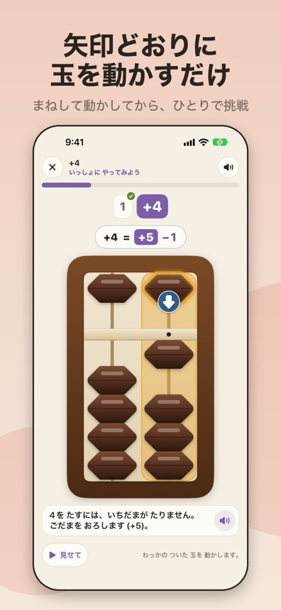
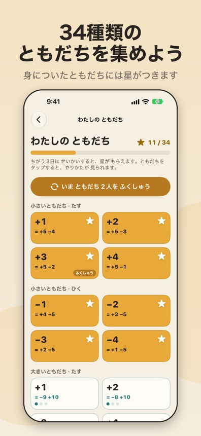
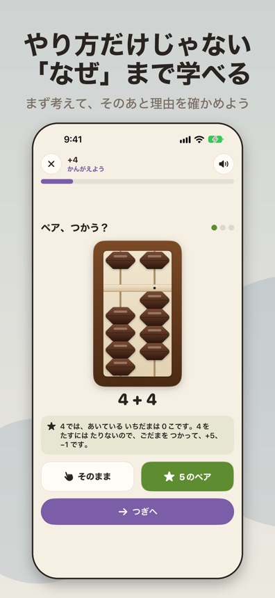
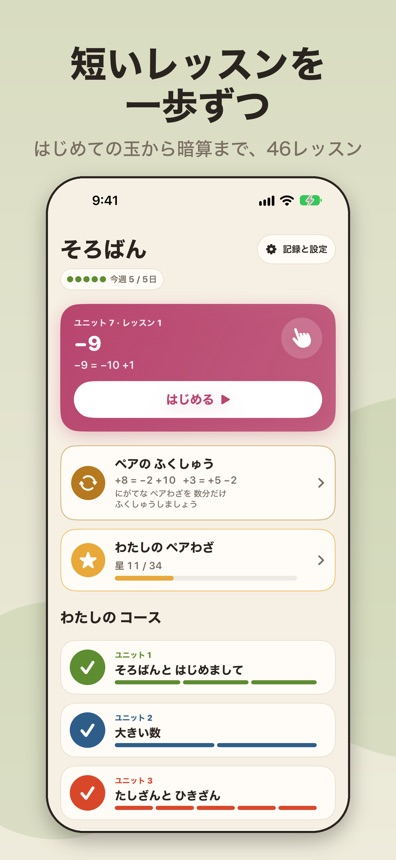
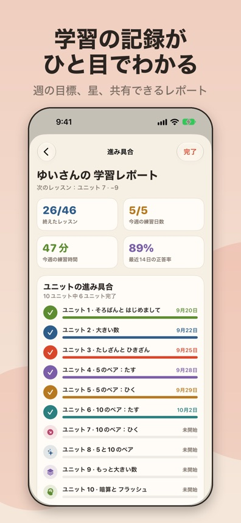

そろばんの道
そろばんを覚えて、頭の中で計算できるように。
App Store で近日公開予定





しくみ
見て、やってみる
レッスンは、短いお手本から始まります。そのあと、玉を動かす場所を案内するので、手を動かしながら動かし方を身につけられます。
補数を知ろう
そのままでは玉で計算できないとき、「補数」（あわせて5や10になる数）を使います。そろばんの道では、34種類の補数の式と、それぞれがいつ・なぜ必要になるのかを学びます。
そして、頭の中で
フラッシュ暗算と読み上げ算の練習で、そろばんが頭の中に浮かぶようになります。そろばんを習っている人が暗算をするときと同じです。
内容
- 全10ユニット・46レッスン。「そろばんと はじめまして」から「暗算と フラッシュ」まで、短いレッスンで進みます。
- 4種類の練習：自由に遊ぶ、見取算、フラッシュ暗算、読み上げ算。
- それぞれの補数の式を、ちょうどよいタイミングで復習できます。
- そろばんをすでに知っている人は、ユニットごとの「とばすテスト」で先へ進めます。
- ユニットごとの修了証と、共有できる学習レポートがあります。
- 説明は「ずんだもん」の声でも読み上げます。まだ文章を読むのに慣れていなくても、聞きながら進められます。
- オフラインで使えます。登録は必要ありません。
まずは無料で
最初の12レッスンと「自由に遊ぶ」は無料です。プレミアムは、1回かぎりの買い切りで、全46レッスンとすべての練習レベルが使えるようになります。定期購読はありません。購入の手続きは Apple が行います。
プライバシーを大切に
学習の記録は端末の中にだけ保存されます。アカウントも、広告も、利用状況の追跡もありません。プライバシーポリシーをお読みいただくか、サポートをご覧ください。